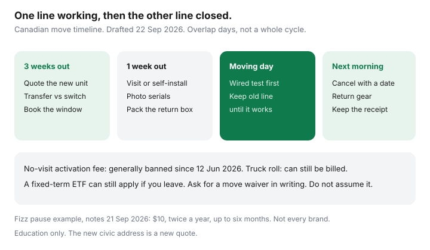

Internet · Canada
Moving in Canada? Transfer, Pause, or Switch Internet Without Paying Twice
A Canadian move creates two internet bills more often than it creates a gap. The old address stays active “just in case,” the new address has a technician on Friday, and the equipment from the old place rides along in a box that never gets returned. Transfer, pause, or switch are three different products. The cheap one is whichever you priced in writing. This checklist is timed to moving day for households who do not want to pay twice. Education only.
Disclosure: Education only. Internet plans are an offer type. Saving Optimizer has no ISP partnership. Pause fees and install fees differ by brand and address. The Fizz pause figure below is from notes read 21 Sep 2026, not a universal Canadian policy.
Key takeaways
- Ask for transfer pricing and new-install pricing in two emails. Include install, whether a term moves with you, and the ETF if you leave instead.
- A short gap may have a pause. Fizz has described a $10 pause, twice a year, up to six months. Other companies may have nothing. Get it in writing.
- The new civic address is a new quote. Fibre at the old house is not fibre at the new condo.
- After 12 June 2026, a no-visit activation fee should not appear. A technician at the new premises can still be billed.
- Overlap a few days, not a billing cycle. Return gear with photos and a receipt before the final bill.
Ask for transfer pricing versus a new install, in writing
Call the current ISP and say you are moving, not that you are cancelling. Those words reach different desks. Ask for an email that states:
- Whether they can serve the new unit at all.
- The monthly rate if you transfer, and whether credits and the remaining term come with you.
- The monthly rate if you start a new account at the new address, because a “new customer” checkout is sometimes cheaper than a loyal transfer. Insulting, and worth knowing.
- The one-time charge, and whether it is a technician at the premises or a setup fee with no visit.
- The early cancellation fee if you leave them instead, as of the move date.
Then price one alternative at the new address only: an independent if the plant qualifies, or the other wireline brand. The three-quote sheet still works. The old address’s winback is irrelevant if that street is not where you will live.
| Path | Monthly at the new unit | One-time | What you give up |
|---|---|---|---|
| Transfer the current ISP | From their move email | Technician or self-install, named | Often the chance to re-shop. Credits may move, or may not. |
| New account, same ISP | From checkout at the new address | Same question: visit or no visit | A new term, possibly a new ETF |
| Switch provider | From the competitor’s address tool | Their install, plus any ETF at the old ISP | Overlap risk and gear return. The switch checklist if you leave for a reseller. |
| Pause, then decide | $0 or a small pause fee during the gap | Whatever they charge to restart | Only works if the gap is short and they actually offer it |
Pause or vacation service if the gap is short
Snowbirds, a closing that slips, and a renovation between possessions are pause problems. Ask. Do not assume. Fizz’s notes, read 21 Sep 2026, described a pause at $10 plus tax, at most twice a calendar year, at most six months each, after which the same price resumes. That is one brand’s rule. A big-brand “seasonal suspend” can cost more, or can be a polite word for cancellation. If the email does not say the monthly during the pause, the date it restarts, and that your number or email survives, you do not have a pause.
A two-week gap is often cheaper as a few days of overlap plus a tight cancel than as a pause product you do not understand. Run both totals. A two-month gap between a sale and a rental is where a pause, or a temporary wireless home plan, earns its keep.

Address-check the new place before you commit
Do this before you waive conditions, if you can, and always before you book a truck. Fibre in the old neighbourhood is not a promise. A strata may allow only one carrier. A basement suite may not have its own drop. Bulk internet may already be in the rent. If the new unit is in Alberta or British Columbia, use the PureFibre versus cable order. If it is in greater Montréal, use the Videotron, Fizz, and Bell order. Rural properties start with the funded-fibre check in the Starlink guide, not with a moving-day order.
Write the upload. A work-from-home household that moves from symmetrical fibre to a cable upload will feel it on Monday. That is a plant fact, not a loyalty failure.
Return equipment from the old address on time
Photograph every gateway, optical-terminal label if it is user-removable, and Wi-Fi pod before the movers arrive. Serial numbers next to a piece of paper with the account number. Rental pods are the ones people leave in a closet; the non-return fee is in the mesh guide.
Use the label or the drop-off the ISP names. A Canada Post receipt is the artefact. Returns after the account closes get lost. CCTS still treats equipment non-return as a charge that can be allowed. The June 2026 fee ban does not turn their modem into yours.
Avoid overlapping service on the bill
Keep the old service until the new one passes a test: a laptop on ethernet, a normal video call, at the new address. Then cancel the old service effective that day or the next morning. A three-day overlap is insurance against a no-show technician. A full extra month is two rents for one home.
Prorates are not generous by default. Ask whether the old bill stops on the cancel date or at the end of the cycle. Put both dates in the email you send yourself. When the first invoice arrives, circle any day billed at both addresses.
If you are inside a fixed term and the new provider is someone else, the ETF is part of the move cost. Internet Code rules still allow a disclosed fee that declines to $0 by the lesser of 24 months or the term. CRTC 2026-43 did not delete it. Some providers waive a term when you move outside their footprint. That waiver is a favour unless the email says it. Ask before you assume the move makes the contract void. The ETF guide is the shape of the fee.
A checklist timed to moving day
- Three weeks out. Address-check the new unit. Collect transfer, new-account, and switch emails. Decide. Book the install window that matches possession, not the realtor’s guess.
- One week out. Confirm the work order: self-install or a technician, and the fee. Photograph old gear. Put return packaging in the “open first” box.
- Moving day. Power the new gateway before you unpack the kitchen. Wired test. If it fails, the old address or a phone hotspot is the backup for the night, not a second year-long contract signed from the floor.
- Next morning. Cancel the old service with a date. Ship or drop off gear the same day if you can.
- Within 48 hours. Save the return receipt and the cancel confirmation in the same folder as the new contract.
- First bill. No double cycle. No activation line without a technician. Rental lines match what you kept. If a no-visit setup fee posted, use the fee guide while the dates are fresh.
One line working, one line closed, gear back. That is the whole save. The new promo can be shopped in week two, when you are not also looking for the kettle.
Sources & date stamps
- CRTC Internet Code, simplified, used 22 Sep 2026 — fixed-term ETF declines to $0 by the lesser of 24 months or the end of the term; month-to-month should not have an ETF.
- Telecom Regulatory Policy CRTC 2026-43; CCTS fee page posted 2 Sep 2026, re-read 22 Sep 2026 — no-visit activation generally prohibited; technician at the premises can be billed; equipment non-return can be billed.
- Fizz pause notes, used 21 Sep 2026 — $10 plus tax, max twice a year, max six months. Not a national rule. Re-check fizz.ca.
- Address tools at the new civic address — the only availability source. Drafted 22 Sep 2026.
Frequently asked questions
Should I transfer my internet or start a new account at the new address?
Whichever 24-month total is lower after install, equipment, and any early cancellation fee. A transfer keeps your term and your credits, which is good when the credits are real and bad when the new address has a cheaper provider. Get both numbers in writing before you book a truck.
Can the ISP charge an activation fee because I moved?
A no-visit setup or enrolment fee on or after 12 June 2026 is the kind of charge CRTC 2026-43 and the CCTS fee page generally prohibit. A technician who installs at the new premises can still be billed. Ask which one they scheduled.
How do I avoid paying two ISPs for the same week?
Keep the old service until the new one passes a wired test, then cancel the old service with a date. Overlap of a few days is insurance. Overlap of a full bill cycle is a mistake. Write both dates on the moving calendar and check the first invoice.
What if there is a two-week gap between homes?
Ask whether your current ISP offers a pause, and what it costs. Fizz, for example, has described a $10 pause, up to twice a year and up to six months, on notes read 21 Sep 2026. Other brands differ. A pause you do not confirm in writing is not a pause.
What happens to the modem and Wi-Fi pods?
Photograph serial numbers before the truck leaves. Use the return label or drop-off the ISP specifies. Keep the receipt. Equipment non-return charges are still allowed when the contract says so. A pod left in the old closet is a fee, not a souvenir.